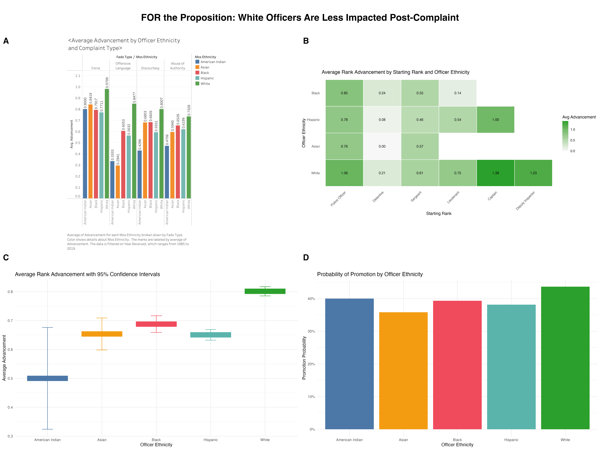
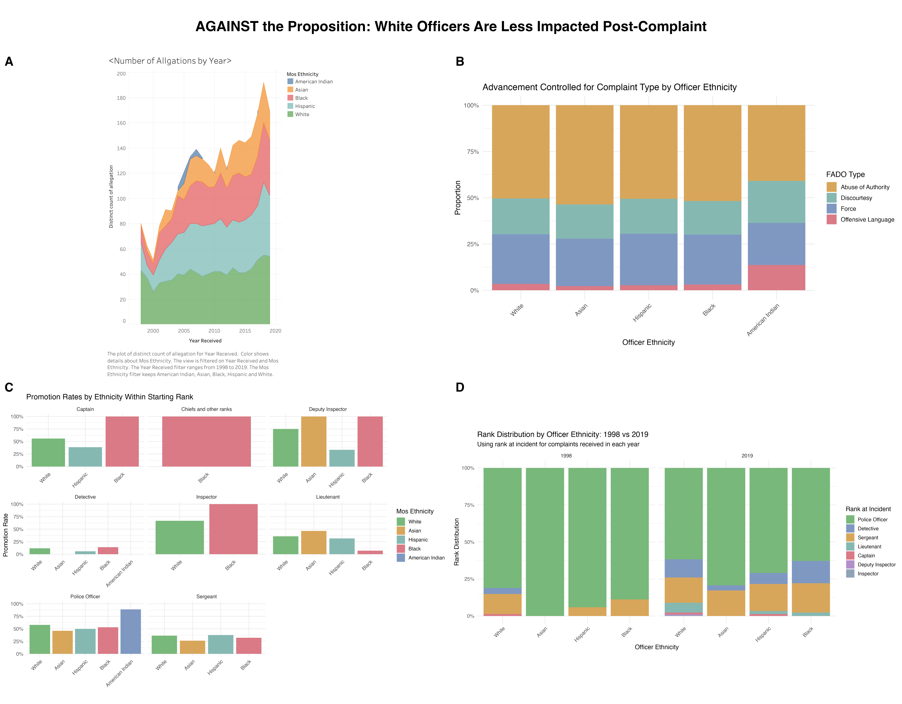

Proposition: Among NYPD officers who received civilian complaints, white officers experience smaller negative impacts on career advancement after receiving civilian complaints compared with officers of other ethnic groups.
FOR the Proposition

A. Average Advancement by Officer Ethnicity and Complaint Type. This subplot shows that White officers generally have higher average advancement across multiple FADO categories, suggesting that the pattern is not limited to a single type of complaint.
B. Average Rank Advancement by Starting Rank and Officer Ethnicity. The heatmap highlights differences in advancement across rank–ethnicity combinations. White officers often occupy cells with stronger advancement values, making the disparity appear persistent across several starting ranks.
C. Average Rank Advancement with 95% Confidence Intervals. This subplot summarizes overall advancement by ethnicity and presents White officers as having the highest average advancement, with the intervals helping the pattern appear more statistically grounded.
D. Probability of Promotion by Officer Ethnicity. This subplot reduces the story to a simpler binary outcome and shows White officers with the highest overall promotion probability, reinforcing the claim that they appear less negatively affected after complaints.
Design Decisions and Rationale:
- Design decision: I used a saturated, consistent ethnicity color palette across all supporting figures
Score: +1
I kept the ethnicity colors vivid and consistent across the bar charts, confidence-interval plot, and heatmap so that the same groups could be tracked immediately from one figure to the next. While the color choices themselves might feel neutral in isolation, combined with high saturation, the palette appears fairly aggressive, especially when the figures are presented together. This visual language makes differences feel more continuous and memorable across the section, which strengthens the overall persuasive effect. At the same time, the brightness and repetition of the palette make the contrasts feel more pronounced, and this becomes even clearer when compared with the more muted color treatment used in the opposition visualizations. -
Design decision: I used chart types that make contrasts look immediate and concrete.
Score: +0.5
I selected grouped bars, a labeled heatmap, and a confidence-interval summary plot because these forms allow the viewer to compare groups quickly by height, position, and color intensity. These are standard encodings, but they also push the reader toward seeing the data as a set of visible differences upfront. Other options, such as plain tables or subtler point plots, would have conveyed the same information less forcefully, so I chose formats that made disparity more legible. This design decision is further emphasized by my ordering choice: I deliberately placed the White ethnicity group at the right-most position in the first three graphs, so that the height differences in the bar charts and the values themselves feel more visually salient. That arrangement also guides the eye toward the lower-right concentration of larger values in the heatmap, making the pattern appear more continuous and intentional across the section. -
Design decision: I included direct numeric labels and statistical cues to make the evidence feel precise.
Score: +1.5
In the complaint-type chart and the heatmap, I displayed exact values directly on the marks, and in the advancement summary I used 95% confidence intervals to add a statistical frame. These features make the visuals feel more authoritative and evidence-based, because the viewer does not have to estimate values roughly from the axes alone. This is mostly earnest because it increases transparency, but it also contributes to persuasion by making the patterns look more definitive and difficult to dismiss.
AGAINST the Proposition
The dashboard below brings together four complementary views that weaken the proposition that White officers are less impacted post-complaint. Taken together, the subplots suggest that differences in career outcomes may be explained by time trends, complaint-type composition, within-rank comparisons, and changing rank structures rather than ethnicity alone.

A. Number of Allegations by Year. This subplot highlights that complaint exposure changes substantially over time across ethnic groups. The emphasis on historical fluctuation suggests that post-complaint outcomes may partly reflect changing institutional or temporal context rather than a stable ethnicity effect.
B. Advancement Controlled for Complaint Type by Officer Ethnicity. This stacked composition plot shows that complaint-type distributions are broadly similar across most ethnicity groups. That framing helps reduce the impression that ethnicity alone is driving the observed advancement differences.
C. Promotion Rates by Ethnicity Within Starting Rank. Once officers are compared within the same starting rank, some of the most striking overall disparities appear less consistent. This subplot therefore directs attention toward stratification and conditional comparison rather than aggregate gaps.
D. Rank Distribution by Officer Ethnicity: 1998 vs 2019. This subplot suggests that ethnic groups may differ in their rank composition across time, which provides an alternative explanation for apparent advancement differences. If officers enter the complaint process at different career stages, average post-complaint advancement may not reflect ethnicity alone.
Final Reflection
Creating both the supporting and opposing visualizations made it clear how strongly design choices shape interpretation, even when the underlying data remain the same. The most straightforward part of the process was selecting chart types that clearly conveyed relationships in the dataset; grouped bars, stacked bars, and heatmaps are familiar encodings that make comparisons relatively easy to read. The more difficult part was realizing how subtle changes in color, ordering, labeling, and stratification could shift the viewer’s perception of the same information. What surprised me most was how small design decisions, such as the saturation of a palette or whether exact numbers are displayed, can meaningfully influence how confident or uncertain the patterns appear. Even without altering the data itself, the framing of the visualization can emphasize either contrast or similarity. I found it especially difficult to switch my angle when creating the opposition visualizations immediately after carefully designing the pro-proposition ones. It felt unnatural to reverse-engineer my own thinking and trace patterns that could support the opposite direction, because so much of the data initially seemed to confirm my proposition. Yet that challenge made it more apparent that the same evidence can become persuasive in very different ways depending on how it is framed and contextualized.
In terms of design choices, I wanted to conduct a kind of experiment: to keep the visual channels and encodings largely fixed, while shifting the argument toward and away from the proposition through more subtle decisions layered on top of those forms. That constraint forced me to pay closer attention to choices that might otherwise seem secondary. One example I found especially revealing was the use of color saturation. As I noted in the earlier sections, reducing saturation and making the palette more matte softened the sharpness of my interpretation of the “trends” in the data, which was especially useful for the opposition case. I was struck by how the same dataset, viewed through a deliberately constrained perspective, could still produce a coherent but highly subjective message. Through this process, I came to think of ethical analysis and visualization as a balance between clarity and responsibility. Ethical visualization should represent the data faithfully while making the assumptions and limitations of the analysis transparent to the reader. Persuasive choices, such as highlighting certain comparisons or structuring the layout to guide interpretation, are not inherently unethical, since all communication involves framing. However, they become misleading when they obscure important context, exaggerate differences through distorted scales, hide uncertainty, or selectively omit comparisons that would materially change interpretation. In that sense, persuasive design is acceptable when it helps the viewer understand real patterns in the data, but it crosses into misleading territory when it intentionally prevents the audience from seeing the full structure of the evidence.